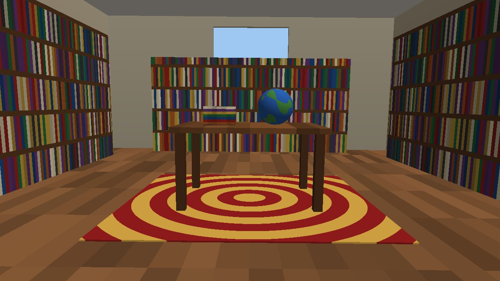
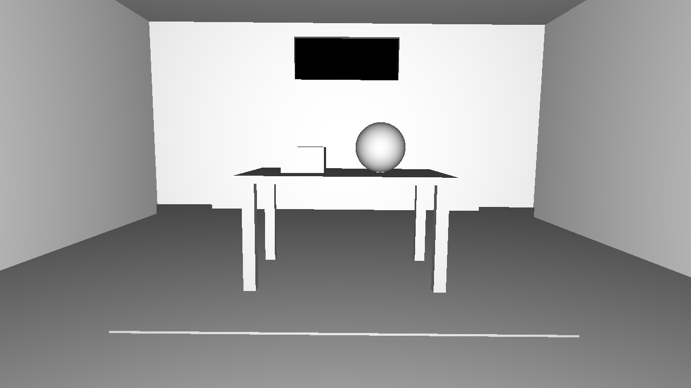
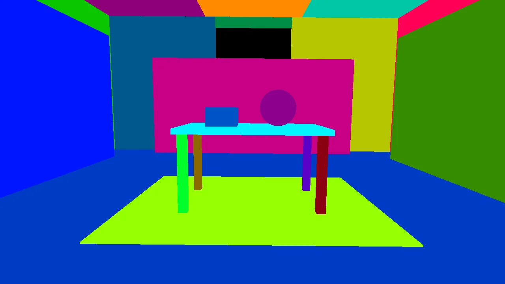
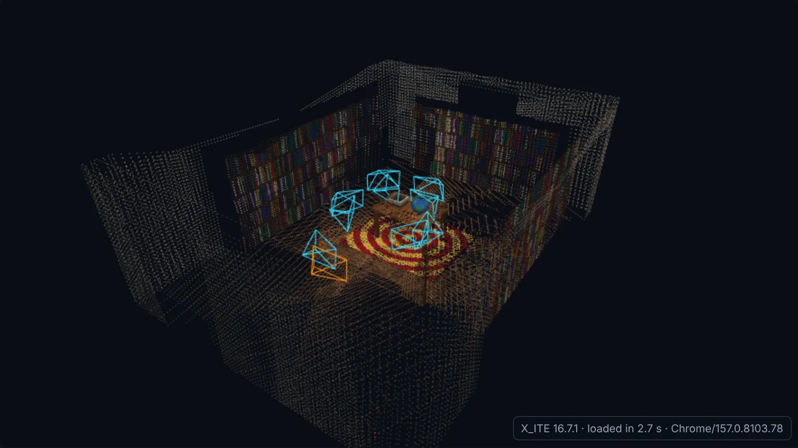

Orange frustum = the posed source photo (camera 0). Blue = the 9 target cameras Atlas would generate. Pick a camera to look through its X3D
Viewpoint: position, XYZW quaternion → orientation, intrinsics → fieldOfView. Body: fused RGBD points (63,684, PointSet),
the same as 2.5 cm Gaussian splats (X3D 4.1 GaussianSplats, via an SPZ v2 round trip), or the mesh GLB in an Inline. Colliders = splats2Mesh
colliderBoxes read into X3D Collision.


confidence (0 = no surface)
X_ITE label frame
fused points1What is new: Marble 1.0 → 1.1 → Atlas
2The bridge: every Atlas output → an X3D node
pose camera-to-world, XYZW, rub/rdf
rejects distortion fields like the API (422)
principal-point shift reported
rows top to bottom
Inline glb · Collision proxy Boxes
3Witnesses: does the bridge put things where Atlas says they are?
4What a live run would cost, and who owns the result
Prices from docs.atlas.worldlabs.ai (billing.md, posed-images-to-splats.md), fetched 23 Nov 2026; 1,000 credits = US$1. The docs give no price for
images2PosedRGBD, atlasGenerate or splats2Mesh and point to the live rate card. Atlas's MCP server (api.atlas.worldlabs.ai/mcp) bills the same credits after an OAuth sign-in, with no API key, so it is a spend path too.
5Tested / not tested
6Run it yourself
pip install numpy pillow OpenEXR lxml jsonschema python3 kit/make_fixture.py --rig data/atlas-skills-rig.json --out data/bundle # 10 RGBD frames, 36 s python3 build/run_all.py # worlds/*.x3d + receipts/numbers.json python3 -m http.server 8776 --directory ../../.. && node build/camtest.mjs http://127.0.0.1:8776/demos/marble-atlas/v1/ /tmp/cam python3 build/compare.py /tmp/cam # receipts/camtest.json # a real Atlas bundle (after a paid call): point build/run_all.py at its operation download folder instead of data/bundle